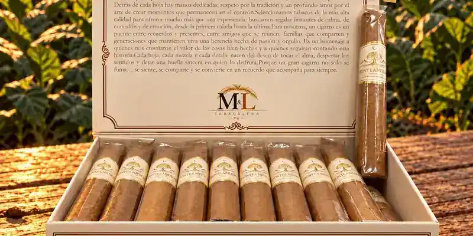

Monte & Mística Connecticut
De Molina & López Tabacalera · Caguas, Puerto Rico
Tabacos de Indonesia, Nicaragua y República Dominicana, con ligero.
- Capa: Connecticut (Ecuador)
- Fortaleza: Media
Fuentes: 1
Ver Monte & Mística Connecticut en la app, califícalo y guárdalo en Mi Hoja.